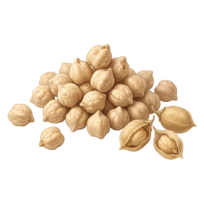

Chickpea

Harvested at the end of summer, it keeps for a year once dried; the base of hummus and falafel.
- Season: all year round
- Peak season: September, October, November
- Botanical family: Fabaceae
History
Domesticated about 9,000 years ago in Anatolia, the chickpea spread all around the Mediterranean and as far as India, the world’s top producer today. In Provence it is at the heart of socca and panisse.
Origin and growing regions
Chickpea growing is expanding in France, especially in the South:
- Occitanie
- Provence-Alpes-Côte d’Azur
- Nouvelle-Aquitaine
- Centre-Val de Loire
Chickpeas love heat and cope well with drought.
Benefits
Chickpeas are filling and versatile:
- Plant protein: About 8 g per 100 g cooked.
- Fibre: Helps you feel full.
- Magnesium: Helps reduce tiredness.
Varieties
- Kabuli: Large, beige and smooth: the most common in Europe.
- Desi: Small and dark, widely used in India.
- Chickpea flour: For socca, panisse and fritters.
Store without waste
- Storage: Dried, in a sealed jar: 1 year. Cooked, in the fridge: 3 to 4 days.
- Freezing: Cooked and drained: up to 6 months.
- Nothing goes to waste: The cooking water (aquafaba) replaces egg white in mousse or meringue.